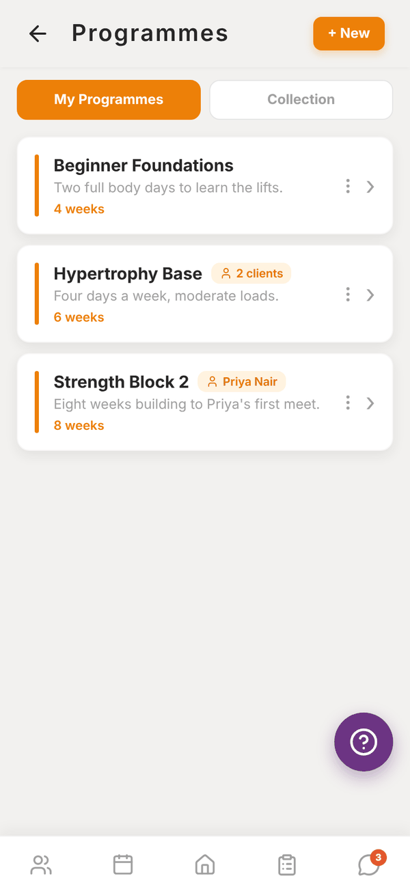
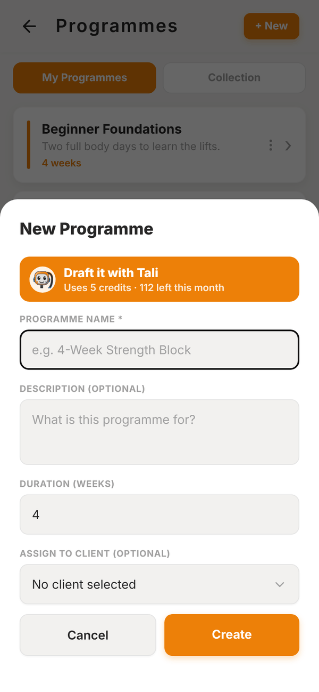
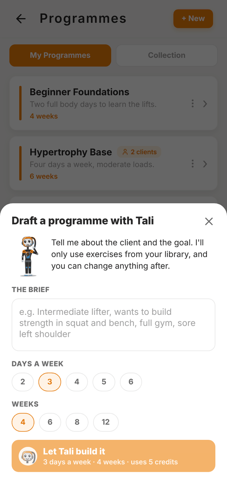
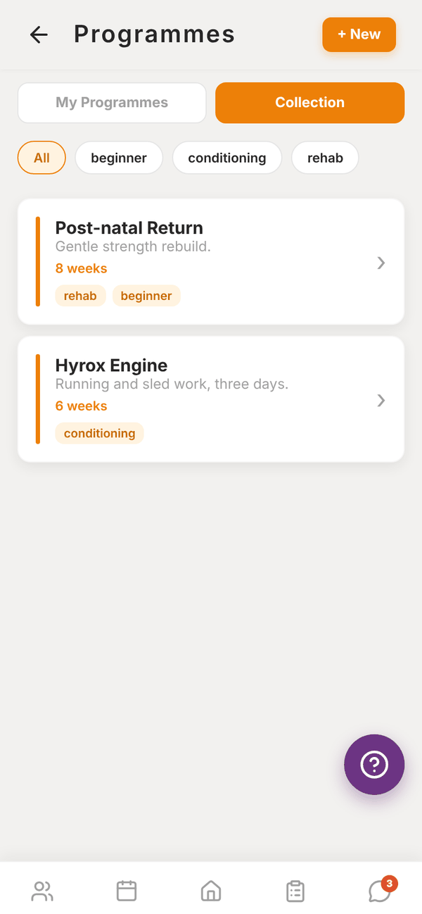

Totality for trainers
Programmes
Create a programme, draft one with Tali, duplicate or share it, and use your gym's Collection.
A programme is a block of training: a number of weeks, each with sessions on set days, each session with its exercises. You build it once and assign it to as many clients as you like.
Open My Programmes from the Home shortcuts.


Your programmes#
Each card shows the programme's name, description, length in weeks, and a pill with who it's assigned to (a client's name, or "2 clients"). Tap a card to open it in the programme builder.
The ⋮ on each card opens a menu:
- Duplicate makes a full copy, sessions and exercises included, with "(copy)" added to the name. Handy for a new block based on an old one.
- Share to Collection (at a gym) lets other trainers at your gym see and copy it. Remove from Collection stops sharing.
Create a programme#
- Tap + New.
- Type a Programme Name, for example "4-Week Strength Block".
- Add a Description if you want, and the Duration (weeks).
- Under Assign to Client (optional) pick a client, or leave it as "No client selected".
- Tap Create. The programme opens in the builder so you can add sessions.
Draft it with Tali#
Paid Trial In the New Programme sheet, Draft it with Tali builds the first draft for you using only exercises from your library. It uses 5 credits.
- Tap Draft it with Tali.
- Write The brief: the client, their goal, equipment and any injuries.
- Pick Days a week (2 to 6) and Weeks (4, 6, 8 or 12).
- Pick a client under For a client (optional) and Tali also reads their onboarding answers.
- Tap Let Tali build it.
- Check the preview, rename it if you like, then Create programme. You land in the builder to tweak sets, reps and exercises.
On the Free plan the button reads Add Tali and opens your plans instead.

Collection (gym trainers)#
The Collection tab shows programmes other trainers at your gym have shared. Filter by tag. Open one to view it, then tap Copy to my programmes to get your own editable copy.

Independent trainers see an empty Collection, because it's shared within a gym.
Questions#
Can I use one programme for several clients?
Yes. Assign it to as many clients as you like. Each client's progress is tracked separately.
If I edit a programme, do my clients see the change?
Yes. Clients on that programme see the updated sessions next time they open it. Duplicate it first if you want a separate version for one client.
Can I delete a programme?
Yes. Open it, tap Functions, then Delete. Every session and exercise inside it is deleted too, and it can't be undone. If you only want it off one client, use Remove from client on their profile instead, which keeps the programme in your library and their past workouts.